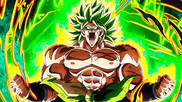

Broly

Broly (ブロリー Burorī?) es un personaje ficticio de la franquicia Dragon Ball. Existen dos versiones del personaje: la primera hizo su debut en una trilogía de películas de Dragon Ball Z estrenada en los años 90